Chapter 1
Counter UAS systems overview
1.1 Introduction
As many recent examples show, small unmanned aerial systems (UASs or drones, in the following) have become a real threat to both civil and military targets. While such advanced technology means a huge opportunity for the military and industry, its alternative, sinister use for criminal and terrorist purposes is no longer a fictitious risk, requiring a huge effort in terms of counteractions.
New developments such as advanced passive and active counter UAS multispectral technologies have been demonstrated to be the most feasible to deal with the counter-UAS challenge. Multiple domains (electromagnetic (EM), acoustic, electro-optic), multiple sensors (active radar, passive EM interceptors, acoustic sensors, infrared (IR) cameras), and multiple jamming/deception systems, integrated via a dedicated command and control (C2) capability, are key elements within this approach.
Small UAS flying near critical infrastructure or sensitive areas (e.g., government buildings, high-profile event locations, prisons, military compounds, big events) are considered as unconventional threats. Detection, identification, neutralization, and (when possible or allowed) destruction of such UAS have therefore become a priority for military forces and homeland security organizations. So far, traditional countermeasures have demonstrated their weakness in this regard. Unconventional threats require advanced solutions, and many industrial and government initiatives are rising to meet this new threat.
To neutralize such kind of threat and to perform a soft kill action, jammer and deception (namely, electronic warfare or EW) are today the most feasible approaches and many examples of in-service products exist, with several degrees of sophistication.
When considering nondestructive techniques, low-power laser technologies and low-power EM pulsed sources are emerging with the aim to negate the threat of the use of electro-optic sensors or the use of the EM spectrum (EMS).
Exploiting cyber capabilities is an important vector to counter the mini drone threat, though respective solutions are still immature and require superior knowledge, skills, and tools in the cyber domain.
Technologies for the destruction of drones (hard kill) include guns and high-power laser and EM-pulsed sources. Blue suicide drones, guided against the threat, are also an example of hard kill action. However, the destruction of drones is not always a good option for several reasons. First, cost-per-shot is very high and requires moderate-to-high level skills of the human in the loop as well as the type of users (military or not). Second, the rules of engagement and local regulations often forbid the use of hard kill due to the presence of civilian population, especially in urban environment or during crowded events. Third, installation and deployment constraints required by hard kill subsystems could not be met in any situation. Finally, the destruction of the drones means the destruction of evidence: reverse engineering processes are often put in place to investigate the origin of the platforms or of its components (including the payload), the modifications that have been set, and the human component behind. As explained in the following paragraphs, we have to consider that while the aircraft itself is not manned, the system is manned (at least prior to the mission to program the flight paths and execution): UASs require a certain amount of human involvement to prepare and execute the mission.
However, despite all the progresses already achieved in countering drones, the game is far from the end.
Specific challenges are continuously arising. Thanks to the evolution of materials and the availability of commercial off-the-shelf (COTS) technologies, including additive manufacturing, long endurance batteries, and commercial navigation aids, drones are gaining lower speed, lower altitude, very small RF, thermal and acoustic signatures, high maneuverability, posing new challenges in terms of detection and tracking.
Furthermore, threats are getting resilient to first-generation counter-drone systems that rely on “traditional” detection and neutralization, for example, the possibility of flying in swarm, possibly boosted by autonomous guidance, using “per-opportunity” data-link and communication means (i.e., 5G).
User requirements are evolving accordingly, posing challenges in terms of variety of applications and installation constraints: from individual soldiers to vehicles and command posts to protect from single individuals to larger critical infrastructures, including urban areas. Therefore, inherent modularity, scalability, and interoperability have to be addressed by design.
Finally, the threat is evolving so fast that procurement rules from both military and law enforcement agencies are drastically changing. Time-to-market is going to be substituted by time-to-field or time-to-operation, traditional tenders are complemented by field trials and live contests, and availability is much more than reliability and, in some cases, “something is better than nothing.”
The goal of the following sections is to introduce the reader to the fluid environment of drone and counter-drone solutions, starting from today and flying deeper into tomorrow.
1.2 Too small and simple to be a threat?
UAS can be classified as summarized in Table 1.1, generally adopted by North Atlantic Organization (NATO).*
Table 1.1 Unmanned aircraft classification guide
| Class | Category | Normal employment | Normal operating altitude | Normal mission radius | Primary supported commander | Example platform |
|---|---|---|---|---|---|---|
| Class III (>600 kg) | Strike/combat | Strategic/national | Up to 65,000 ft ASL | Unlimited (BLOS) | Theatre | Reaper |
| HALE | Strategic/national | Up to 65,000 ft ASL | Unlimited (BLOS) | Theatre | Global Hawk | |
| MALE | Operational/theatre | Up to 45,000 ft MSL | Unlimited (BLOS) | JTF | Heron | |
| Class II (150-600 kg) | Tactical | Tactical formation | Up to 18,000 ft AGL | 200 km (LOS) | Division, Brigade | Watchkeeper |
| Class I (<150kg) | Small (>15 kg) | Tactical unit | Up to 5,000 ft AGL | 50 km (LOS) | Battalion, Regiment | Scan Eagle |
| Mini (<15 kg) | Tactical sub-unit (manual or hand launch) | Up to 3,000 ft AGL | Up to 25 km (LOS) | Company, Platoon, Squad | Skylark | |
| Micro (<2 kg) | Tactical sub-unit (manual or hand launch) | Up to 200 ft AGL | Up to 5 km (LOS) | Platoon, Squad | Black Widow |
Source: NATO ATP-3.3.8.1, ed. B, Ver. 1.
Notes: HALE: high altitude long endurance; MALE: medium altitude long endurance; ASL: above sea level; BLOS: beyond line of sight; AGL: above ground level; LOS: line of sight; JTF: joint task force.
NATO UAS categories are based on unmanned aerial vehicle’s (UAV) maximum gross take-off weight and typical operating altitude. Categories first focus on classes of weight, which are further divided based on the operational altitude.
Class I, which is the subject of the discussion in this chapter, refers to platform less than 150 kg (further divided down based on altitude). Under 150 kg, the NATO Certification Standards do not apply.
The maximum operating altitude of several current UAVs is shown in Figure 1.1, along with the boundaries for different classes of controlled airspace, referred to as the maximum take-off weight (MTOW). Micro, mini, and tactical UAS show clear breakpoints in mass and maximum altitude. Micro and mini UAVs are likely to be operated close to the ground and are generally not capable of reaching above 1,500 m. Tactical UAVs occupy a much broader mass range, from 15 to 600 kg, and are primarily distinguished by their ability to operate higher, approaching the boundary of airspace at 5,000+ m.
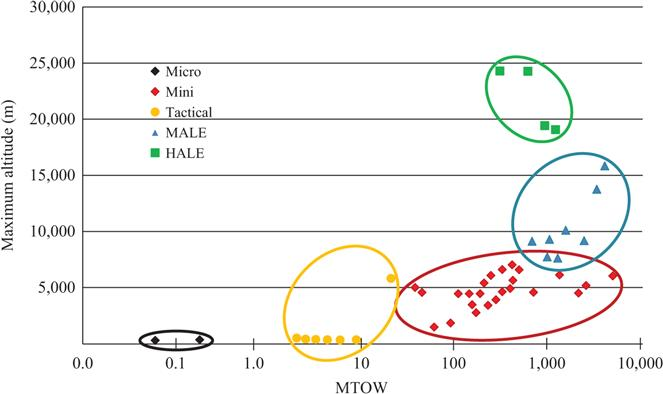
Figure 1.1 Unmanned platform’s maximum altitude w.r.t. MTOW
The maximum endurance of several UAVs is shown in Figure 1.2: micro UAVs typically have endurances measured in minutes, as they typically do not carry enough power to remain aloft for long time. As the mass of UAVs increases, the current maximum endurance capability also increases exponentially. Mini UAVs can typically be operated for several hours, tactical on the range of 5–10 h, and medium and high altitude from 10 h to days.
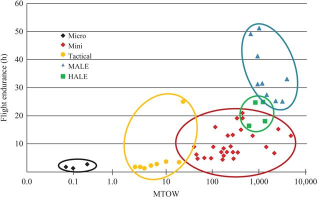
Figure 1.2 Maximum endurance of current UAVs with respect to MTOW
Small, mini, and micro UAVs or drones are rapidly becoming “tools of the trade” in many industries and can be categorized into segments of the market as in Table 1.2: government (including military), enterprise (corporations/businesses), and consumers (personal/hobbyist).
Table 1.2 Types of mini–micro UAS application
| Segment | UAS application |
|---|---|
| Government agencies | Homeland security, weather, search and rescue (first responder), military air/sea/land applications (weaponized, surveillance, and patrolling) |
| Businesses/enterprises | Agriculture, photography, video production (movie, TV, documentary), infrastructure, and building inspections (pipelines, cell towers, railroads, waterways, docks, and locks) |
| Personal/hobbies | Racing, personal photography, blogging, podcasts, video-blogging, experimental purposes, sports affiliated, and videoing events (including live streaming) |
Since low-altitude drones fly only hundreds of feet above ground, they mostly operate outside the traditional radar coverage used to track commercial aircraft. Additionally, military air defense radar systems are usually not designed to detect aircraft with such a small radar cross-section (RCS). In other words, there is an airspace segment still out of control for both civil authorities and military air power.
According to the Centre for the Study of the Drone at Bard College “there are more drones, made in more countries, and flown by more groups, than in any other previous conflict.” Among the 38 different types of UAS, the institute counted at least eight recreational hobby drones and possibly six unidentified homemade models, asserting “the conflict marks the first time that hobby drones have been modified with explosives and turned into flying improvised explosive devices.”†
However, such use of mini drones may not be limited to zones of war or conflict. The probability of threat proliferation to domestic areas combined with the inability of traditional airspace control and defense to effectively deal with such small and low-flying objects underlines even more the pressing need for appropriate counter-UAS technology. Many companies worldwide have therefore created intense research and development programs to provide effective solutions.
The combination of versatility, easiness to use, good endurance, low visibility, market availability, and relatively large payload makes these platforms a very dangerous threat if used with malicious intents and requires a dedicated, specialized, and “fine-tuned” capability in order to provide effective detection–classification–identification and neutralization.
When we talk about a UAS, we have not just to identify the flying platform but also to address the integration of several subsystems and people that take part to perform a single mission.
In particular, Figure 1.3 identifies the main components involved in an action performed by a UAS. It has to be considered that while the aircraft itself is not manned, the system is manned. UASs require a certain amount of human involvement to prepare and execute the mission, and this is mandatory to be remembered in putting in place any strategy of counteraction.
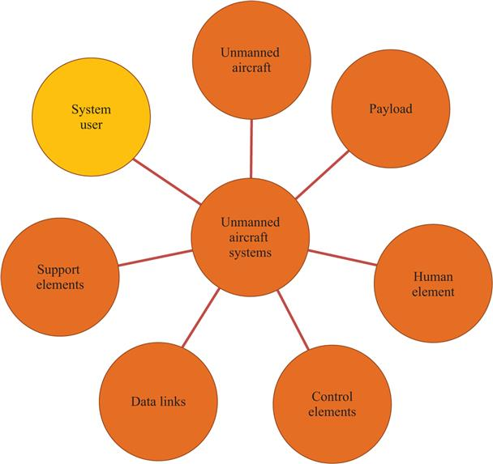
Figure 1.3 Unmanned aircraft system components
1.3 Why an integrated system of sensors and shooters is a must?
Defending against small drone threats is a complex issue, since it is not only about eliminating the drone to prevent it from completing its mission. A successful defense must ensure the immediate detection, classification and identification of the object prior to neutralize it in a secure framework for the safety of the people on the scene, as well as minimizing collateral damages.
Given the physical and kinematic characteristics of the drone and the typical modes of use, a multiple sensor approach is necessary to improve the detection capability. Several options, each with their own strengths and weaknesses, are currently taken into account.
Radar. Detection, tracking, and range estimation of aerial targets are the main tasks performed by the radar. However, mini drones are hard to detect and identify due to very low radar signatures and related difficulties to exploit the Doppler effect.
A large variety of commercial drones do not allow assessing a reference value for the RCS of such targets. In any case, as depicted in Figure 1.4, measurements of RCS on significant samples reveal that RCS is substantially independent of frequency (in the range of 1–40 GHz) and polarization and reaches a minimum value in the order of 0.01 m2. This is due to the low reflectivity of the materials of the body. The batteries give the main contribution.
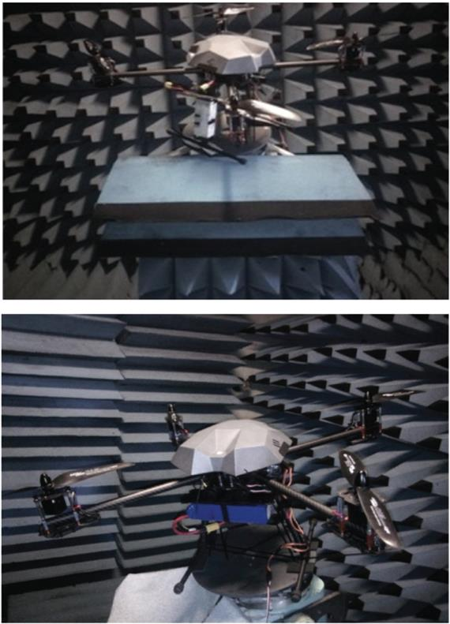
Figure 1.4 Measurement of RCS of drones at ELETTRONICA facilities (courtesy of ELETTRONICA SpA)
Furthermore, it is a tremendous challenge to distinguish the target from other objects, particularly in an urban environment with a high probability of false alarms. The challenges increase when trying to use a passive (bistatic) radar.
On-field experiences confirm that target discrimination task is a system issue and not a sensor issue. While mechanical rotating parts (blades) generate micro-Doppler effects that can be used for this purpose, this is not always a reliable or even available information and often it must be correlated to other measurements such as estimated trajectory, detection of radio signals, and visual confirmation (by human or by automatic algorithms or both).
Anyway, an active radar remains the prior sensor in all the solutions on the market, due to its unique capability to estimate the distance of the threat and consequently its time-of-arrival. Estimated time-of-arrival is the key element in the decision-making process of the reaction chain.
Therefore, the best choice of the radar sensor in a counter-drone solution is a critical issue. The main characteristics that are currently driving this choice (and will drive much more in the future) are as follows:
- Native 3D radar (azimuth, elevation, and range), based on an electronically scanning antenna, is able to generate one or multiple beams in azimuth and elevation. This is justified by the operational requirements to cue efficiently the camera (automatically or operator-assisted), to have a prompt confirmation of the nature of the threat, and to steer the shooters (soft/hard) in both azimuth and elevation to maximize effectiveness.
- Simultaneous tracking of multiple threats. This is needed to counter attacks of coordinated drones or cooperating swarms.
- Easy re-programmability via software (SW), which is a key characteristic to guarantee a real growth capability against new or emerging threats.
- AESA architecture (no rotating nor mechanical parts), which ensures the faster reaction time to alarms, the activation of the countermeasure chain, and high reliability.
- Designed to be moved or transported and deployed rapidly, even by a single soldier or operator, which requires the radar to be “tactical” by design.
- High-technology readiness level, available in operation in a short time to face the so-called Urgent Requirement often expressed by users.
- Fast delivery time, which means capability of high production rate.
The use of a 2D radar instead of a 3D might be justified by several factors such as simpler expected scenarios, reduced automation in cueing the camera, or the countermeasures, no countermeasure integrated, cost. National and international regulations are also driving factors: it is interesting to underline that 3D radars are usually classified as “military goods” and require military personnel to operate.
Camera. Together with EM sensors, thermal cameras are essential devices, usable under low-visibility conditions and at night. The main issue is that the range of threat acquisitions is less than the radar detection range. This requires the camera to be cued (in both azimuth and elevation) by the radar tracks and the radar to continuously track the target.
The challenge for IR sensors is represented by the need to reveal drones even in the presence of strong lighting conditions. Highly sophisticated cameras available on the market show some abilities to locate thermal hotspots generated by motors. Such hotspots, located in fixed positions in relation to the structure of the drone, also contribute to automatic object identification by making use of IR image reference libraries. Examples of such thermal hotspots are shown in Figure 1.5.
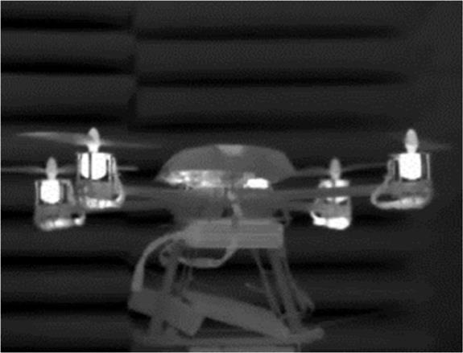
Figure 1.5 Measurement of IR signature of drones at ELETTRONICA facilities (courtesy of ELETTRONICA SpA)
Usually cameras are human-operated and identification confirmation is human-assisted.
EM sensor. Electronic defense systems are commonly integrated in the most effective counter-drone solutions. These devices quickly detect the presence of radio signals used to send the commands from the pilot to the drone (uplink) and the data and images from the drone to the command post (downlink). For commercial drones, the radio signals are transmitted on well-known and standardized frequencies, relatively easy to be intercepted with electronic surveillance in automatic mode, even though complex wave modulations are often superimposed by the carrier signal.
Passive interceptors of this type have the capability to automatically analyze the radio wave and allow the identification of the threat based on the transmitted waveform (noncooperative target recognition). This is a very interesting complement to the radar detection and could be also used for false alarm reduction and target discrimination from birds or even friend drones. Furthermore, passive geo-location techniques can be put in place to locate both the drone and the control station.
However, this apparent over-complexity in the counter-drone systems is even essential in terms of threat identification: the availability of preloaded data allows the system to automatically identify friend-vs.-foe drones and finally correctly generate smart jamming waveforms dedicated to the specific drone.
Acoustic. During flight, drones generate noise both in the audible frequencies and in the ultrasounds. Acoustic sensors reveal the presence of mini drones as well as help to classify the target based on noise characteristics specific to the drone model.
However, the operational range of acoustic sensors is limited to a few hundred meters. At higher distances, drones are lost in background noise. On the other hand, pulse radars have a blind spot at shorter distances. This means that the acoustic sensor, made up of an array of microphones, is the ideal complement to radar systems to cover both long and short ranges. Being relatively cheap, acoustic sensors are efficient tools for continuous surveillance of particularly sensitive areas.
Examples of acoustic signature in a typical operational background are shown in Figure 1.6.
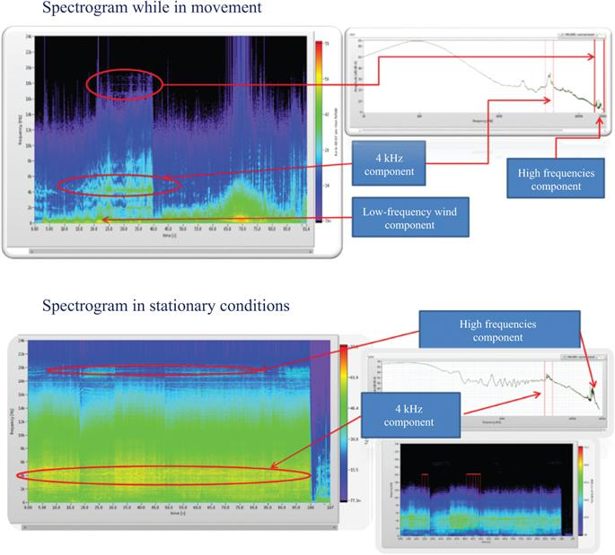
Figure 1.6 Examples of acoustic signature of drones in typical background (courtesy of ELETTRONICA SpA)
Every sensor technology has pros and cons, touching a variety of factors: operational performance, installation constraints, life cycle costs, modularity and scalability, military or nonmilitary use, maturity.
Table 1.3 shows a qualitative comparison among the eligible sensor technologies.
Table 1.3 Counter-drone eligible sensors—“What is best” analysis
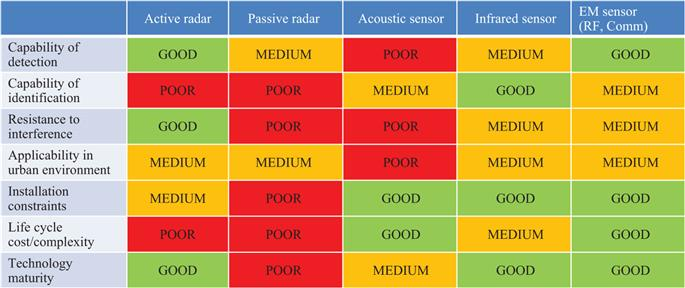
The conclusion is that there is no “silver bullet” to detect–classify–discriminate–identify the threat and that a plethora of sensors, correctly and functionally integrated, are needed to enhance the probability of detection and the correct trigger of the reaction chain. As we mentioned earlier, human-in-the-loop is also a key factor, at least for today’s policies and tactics, and the complexity of the technologies put in place together with the unpredictability of the threat requires a high level of skills.
Detection and identification are essential, but they are only the preliminary steps in solving the problem of removing the rogue drone from the scene and/or its neutralization. “Hard Kill” or physical destruction options are limited to combat zones or an open field, where the consequences of falling wreckage, ordnance, or other harmful items are generally irrelevant. In an urban scenario, a different approach aiming at a “Soft Kill” philosophy is preferable. The following described options have currently been proven as feasible and effective.
Jamming. A first option is to affect the previously detected and identified radio signals, which would subtract and sever the control of the drone from the operator. Then the drone could be forced to land in a safe area or to crash without risking collateral damage. The simplest technique is to generate jamming signals against the control link, delivering enough power to negate the use of the EMS. According to the programmed modes, the drone then automatically enters into fail-safe mode causing it to land or return home.
This “brute force” approach however requires generating a huge amount of EM power and broad-spectrum jamming of the whole area, which may also result in the undesired suppression of friendly communications.
A more sophisticated and selective technique is the so-called Smart Jamming, which consists of jamming the control signal only in some specific timeslots, according to the specific protocol used by the radio remote control. Smart Jamming techniques require a priori knowledge of the waveform and its coding, which requires the availability of a library of control signal protocols. This is obtained by extensive and expensive a priori activity of reverse engineering and intelligence that gives additional strength to the blue forces in countering the threat.
GPS deception/spoofing. One should argue that this technique only applies to UAV large enough to be utilizing Global Positioning System (GPS). Many mini and micro UAVs will likely be too small and short range to have GPS. Well, size may not really be limiting the use of GPS. Look at modern smart phones with lots of inbuilt functions and features taking advantages from the positioning and timing information. Miniaturization of a GPS receiver and global availability of positioning systems today are integrated in many UAVs available on the open market (5–10 k€, not really toys, etc.). Furthermore, even toys can be modified on purpose to support this capability.
Negating the use of GPS, or more generally, the use of Global Navigation Satellite System (GNSS), is part of the discipline identified by NATO as “Navigation Warfare” and has been largely demonstrated to be effective against many navigation receivers.
In 2012, a research team led by Professor Tod Humphrey of the University of Texas at Austin successfully demonstrated for the first time that UAV GPS signals could be commandeered by an outside source.‡
The most effective albeit complex technique is GPS spoofing, provided the targeted UAS is using satellite navigation. Based on military capabilities designed to deceive adversary precision-guided munitions, the technique consists of first seducing the UAV’s GPS receiver to recalculate its position, and second, deviating its path in accordance with preplanned countermeasures. To this end, a spoofing device transmits imitated satellite signals while deceiving the target with formally correct but false position data. This requires knowing the exact position and speed of the drone, which can be provided by a radar sensor. Precise scheduling of each spoofing phase is also needed to reduce the effectiveness of counter-countermeasures of certain smart, GPS-based guidance systems.
Direct energy weapons. In addition to these soft-kill techniques, weapons are being developed that produce a high-power microwave EM pulse that is highly effective against electronic equipment. With a specifically shaped antenna, or an emitter, the energy can be focused to produce effects within a confined area and limited range. Under certain circumstances such weapons could ideally complement the other techniques to neutralize small drones.
Under this category, it should be mentioned also the use of high-power laser. The technology, even if still not fully mature, is demonstrated to be highly effective, generating the destruction of the target. The major issue is linked to the safety of the humans operating the laser gun.
Blue drone. The blocking of the enemy drone, that is, the neutralization of the threat, can also take place physically thanks to the use of friendly drones (blue force drones→blue drones) also known as drone hunters.
The family of drone hunters is young but is populating very rapidly. Inside the family we can list the following:
Drone catcher. This is a kind of drone (often a multicopter) equipped with a net fired by a gun.
After detection, the drone catcher is rapidly deployed to intercept the moving target, under the control of a remote operator.
As soon as it gets close to the victim drone, using multispectral onboard sensors, it locks the net gun onto the target then safely captures it by firing the net, tows it away to a safe location, and releases it there.
Collision drone. This is a drone normally remote operated. After detection, the drone is rapidly deployed to intercept its prey, locks on it, and disables it by collision.
Weaponized drone. This is a kind of drone equipped with explosives. After detection, it is rapidly deployed to intercept the moving target, under control of a remote operator. As soon as it gets close to the victim drone, it fires the explosives to damage the target. This application is particularly useful to counter-drone swarm attacks (one-to-many).
All the abovementioned solutions can be upgraded to a higher automation level making a wide use of onboard artificial intelligence (AI) and advanced machine vision processing making them patrolling a given airspace.
Within the assigned area, they can autonomously detect, intercept, and neutralize any unwanted objects.
The new generation hunter drones can be operated as a standalone unit or integrated inside a higher level counter-drone infrastructure.
1.4 Operational use of counter-drone solutions
From the operational point of view, a counter-drone solution should be able to
- detect, classify, track, identify, and counter UASs (single and/or multi-UAVs) in defense scenarios using multiple technologies;
- operate from detection to counter UASs also in civil scenarios;
- deliver and update real-time operational pictures and alerts;
integrate into a multilayer C2 system with cross-security-domain approach. Two main operational modes must be available:
- – Soft
- – Hard (integrating Soft Kill capabilities and supporting functions);
- provide a range of selective mitigation alternatives with the ability to evaluate mission success probabilities and resulting drawback;
- require limited logistic support for deployment and maintenance;
- require minimum operator effort for decision-making;
- provide dynamic scalability of sensors and effectors;
- facilitate the incorporation of counter UASs in security and defense systems for fixed and deployed asset;
- be able to operate in a wide range of climate (e.g., arctic and subtropical) and weather (e.g., rain, fog, and snow) conditions.
Therefore, a counter-drone solution (an example is given in Figure 1.7) is not just the sum of sensors and shooters, but a comprehensive and continuously evolving multidomain area protection capability aimed to detect, discriminate, identify, and neutralize drone threats.
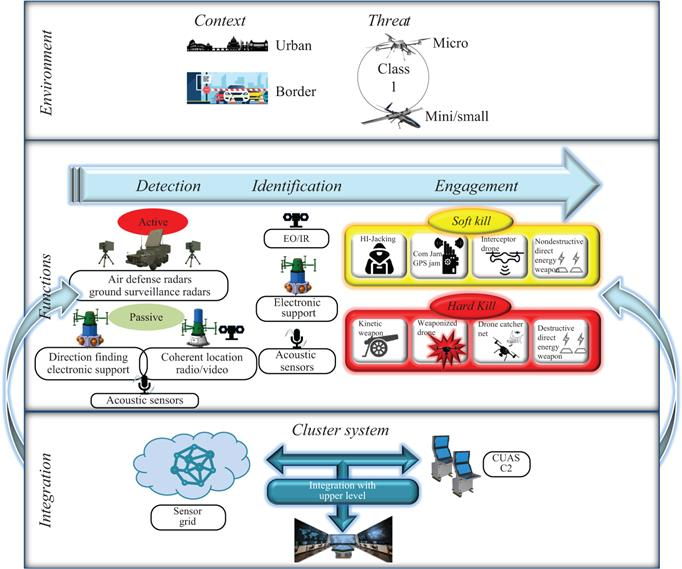
Figure 1.7 C-UAS possible solution
Sensors and countermeasures need to be functionally integrated and effectively coordinated, so they interface via a mobile ad hoc network with a C2 station, typically with a man-in-the-middle, with an intuitive and easy-to-use interface.
As none of the sensors nor the shooters previously described can be considered a “silver bullet,” the core of the solution is the C2.
It is important to remember the correct definition of C2, as recommended by US doctrine.§
“Refers as command and control (C2) system the facilities, equipment, communications, procedures, and personnel essential for a commander to plan, direct, and control operations of assigned and attached forces pursuant to the missions assigned.”
The operational point of view is much more complicated, and at least for today and for the next decade, the decision-making process is supported by the machine but essentially conducted by the human.
Nevertheless, the machine or the SW logics of the C2 plays an essential role, because the most important requirement of such applications is the reaction time and no human is able to manage the amount of data/information and the complexity of the technology deployed in the short time (few seconds) needed to raise an alarm and counter act.
As an example, Figure 1.8 shows the typical range of effectiveness of the main sensors and shooters of a counter-drone solution, which gives an idea of the reaction time needed to guarantee a fit-for-purpose probability of success.
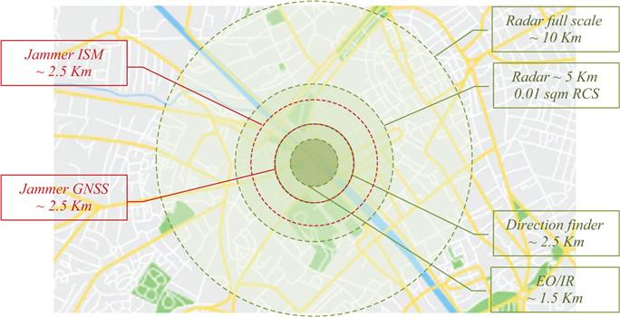
Figure 1.8 Typical range of effectiveness of a counter-drone solution
Modern solution of SW logics implementing C2 functionalities in support of the decision-making process is based on the so-called OODA (observe–orient–decide–act) loop. Colonel John Boyd, a military strategist for the US Air Force, has theorized this in the 1990s, and it is often applied at the operational level during military campaigns. It is now also applied to understand commercial operations, learning processes, and many cases of decision-making processes.
Figure 1.9 summarizes the four steps of the original cycle, as Col. Boyd described them.¶
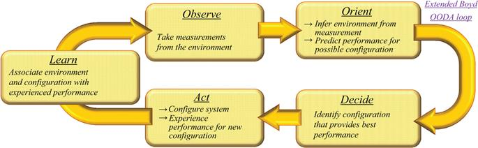
Figure 1.9 Extended OODA loop high-level description
Modern views of the cycle have introduced the capability of the commander to improve the decision based on the experience (LEARN), which could be apparently obvious but requires methods, information storage and sharing, and related procedures of verification–validation when applied to operational context.
When applied to the mission of countering UAVs, SW logics in support to the decision-making process are typically organized in a function tree as depicted in Figure 1.10.
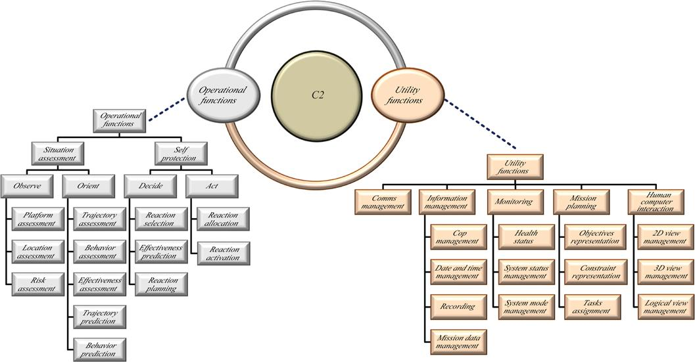
Figure 1.10 Typical functional tree of a C2 for counter-UAV solutions
Behind every functional “box,” complex algorithms could be required to contribute effectively to the success of the mission. In the last years, the availability of high computer power and the possibility to gather, store, and manage a large amount of data have boosted the application of many branches of AI, including the following:
Machine learning and data fusion. This allowed the reduction of overload of the human in the decision-making process, assigning to the machine (the computer) the execution of repetitive or computationally complex tasks, or those requiring times shorter than human capability.
In any case, every proposed solution, modular and scalable according to the operational scenarios and the needs of the final user, is several times more complex than the threat, requiring a plethora of assets (tangible and intangible) deployed. All the active and passive sensors and the effectors are integrated and connected in a local C2 station. This station implements data fusion and automatic procedures and rules in order to focus human operations on action, resources coordination, and cooperation. Controlling these assets will require highly qualified and best trained operators, whose mission preparation needs to be much more professional and complex compared to the relative simplicity of the threat.
1.5 Future scenarios and enabling technologies
As already anticipated, despite the advances in system architectures and sensor technologies, the game is far to be over.
The threat is rapidly changing and continuously evolving, taking advantage from the availability of COTS technologies and SW algorithms shared in the web even by smart young students.
Drones can be assembled from scratch, buying all parts via web, and programmed using open source SW codes or tools. More and more they will fly independently from the aids of GNSS, using inertial navigation or taking benefits from other sources of positioning, as cellular grid, for example.
Swarm intelligence is no more a fantasy of some smart fiction writer nor a theoretical mathematical discipline. “Soon the sky will be full of toy-like drones flying in formation over unidentified mountains in China,” Financial Times has published in August 2017.‖
This unlikely spectacle could represent a revolution in military and security affairs. The June 11, 2017, demonstration of “Swarm” technology by China Electronic Technology Corporation (CETC), a state-owned high-tech company, included 119 drones. That made it the world’s largest ever swarm, according to CETC, breaking US-held record. Nevertheless, on December 31, 2019, a spectacular exhibition of 500 drones took place in Singapore, at Marina Bay Sands, during the New Year celebrations: the figures created in the sky were “coordinated” and “programmed,” while swarm intelligence algorithms were used to guarantee collision avoidance and correction during flight.
Each tiny aircraft is loaded with SW and sensors capable of communicating with other drones in the swarm. Developers are working toward a future where thousands could operate in accord, identifying and attacking targets. In theory, such swarms could feature drones fitted with any kind of payload, including warheads capable of overwhelming defenses with their sheer numbers. Swarms of drones, low-tech hardware knitted together with high-tech AI SW, will become a weapon of the future.
The gamble is that they can be effective both as lethal and nonlethal weapons. Thousands of cheap, 3D printed drones, for example, could swarm aircraft carriers or jets, which currently have no countermeasures for such attacks. They can also be effective without being lethal by crossing the line into a shooting war—a valuable form of deterrence, especially for weaker countries.
Many say that mature swarm technology is still a long way off and will require developing the necessary technology to boost communication between the drones, methods to keep them in the air longer, and a modern military approach and culture capable of deploying the swarms effectively. However, before addressing swarms of thousands or even hundreds of drones, thinking to deploy swarms of few (10–20) is today already feasible and this opens to a number of scenarios in our domain of interest never imagined before.
Furthermore, trials are reported of few drones (in the order of the tenths) flying in swarm using 5G infrastructure as a per-opportunity communication link, against which no countermeasure is on the market at the moment.
1.5.1 What will be the future of counter-drone systems?
Sensors will need to improve in terms of detections-classification capability: the radar needs to detect weaker signatures, to recognize the presence of a swarm and to cue the reaction properly. The EM sensors need to extend their bandwidth to frequencies unconventionally used by the threat and being able to produce information related to the topology and hierarchy of the swarm. Cameras will face with the challenge to focus not just a single target and to continue to give the right support to the human in the loop in the decision-making process.
A complete paradigm change will rise for firing or any kind of reaction. From the concept of a “single bullet for a single target,” a strategy of “sparse effect” should be put in place. Jamming remains the most effective, due to its capability to affect a wide volume simultaneously, and the most efficient, in terms of cost-per-shot. Challenges are related to the new frequencies unconventionally used by the threat, availability of power, and reaction time (i.e., being in the right place at the right time).
Behind the scenes, the real improvement will be required to the C2 chain. The overload of the human in the loop will dramatically increase and need to be strongly supported by SW logics much more than today. The idea is bioinspired or better, human-inspired and seeks to emulate a “cognitive” and “autonomous” approach to the environment in terms of observing, orienting, deciding, acting, and applying experience.
As is well known, the mathematical-engineering discipline that aims to create an intelligent agent that is a machine emulating the human behavior is commonly identified as AI. Nevertheless, under this terminology, many specific disciplines are categorized, each one typically dedicated to one specific aspect of the human behavior that it is assumed to be emulated.
Generally, the C2 environment is not the ideal place for “expert systems” because it is considered an intellectual exercise traditionally associated only with human intelligence.
There are, however, specific applications that fall within the bounds of control mechanisms that meet these prerequisites.
These expert systems are embedded usually into real-time military applications, typically as part of a weapon or weapons platform, and perform such military-specific functions as battle management, threat assessment, and weapons control.
As the battle-space becomes more complex and the requirement for faster decisions and reactions increases, there will be a growing need for automated expert systems for functions as sensor interpretation and “automatic target recognition–classification–tracking,” based on anomalous behavior detection systems, trained on “standard” behavior data.
Other AI-based systems, known as “decision support systems,” have broader applications in the C2 environment. This is because they assist in the organization of knowledge about ill-structured issues.
The emphasis is on effectiveness of decision-making, as this involves formulation of alternatives, analysis of their impacts, and interpretation and selection of appropriate options for implementation.
These systems aid humans in mission planning, information management, situation assessment, and decision-making.
A particularly relevant application is in the area of “Data Fusion,” where AI advancements in the fields of natural language, knowledge discovery, and data mining are assisting in the analysis and interpretation of the vast quantities of unstructured/structured, synchronous/asynchronous, formatted/unformatted data collected by the ever-increasing number of intelligence, surveillance, and reconnaissance assets. This cognitive approach is rapidly overcoming the traditional approach based on rules, maximum likelihood, and correlation among elements.
In addition, AI contributions to “Game Playing” and simulation are also leading to better training for personnel who must perform within the demands of the C2 environment.
More in general, by exploiting its ability to interact with humans, AI-based C2 can learn diverse behaviors (off-line and online) and eventually, into the context of military operations, can perform a number of tasks oriented to support the decision-making process (cognitive decision-making).
As an example, the communicative ability of the human brain is limited by low-bandwidth input and output, and the thinking power of the brain, while impressive, is rather slow. In the C2 context, the amount of time required to train and develop human commanders is significant and yet they still are affected severely by such prevalent factors as stress and data saturation. In these areas, as well as in more recognized areas involving human physical and emotional vulnerabilities, AI technologies will offer significant advantages.
Since command, by nature, is an intellectual activity that requires decision-making in a dynamic environment, these developments are promising elements for the progressive incorporation of AI technology within the command element of C2.
Meanwhile this introduction can be supported by means a progressively decreasing supervision activity thanks to a human–machine–teaming (HMT) approach. AI advances in human/machine interface capabilities will then help one to close the gap between humans and the machines that support them. The new trend is “human–machine–teaming” where the machine learns from the past events, decision of the human, and increases its experience and probability of success in the future (proposed/autonomous) decisions.
The still controversial question lies in whether AI technology can advance to the point where this gap no longer exists, effectively allowing machines to replace humans and perform with human intelligence.
It is at this stage that AI will complete its entrance into the realm of command.
1.6 Conclusions
In 2016, Michael Blades, research director at the market research firm Frost & Sullivan, said that the counter-drone industry was too new to offer a market estimate.
However, things have changed, and quickly: the counter-drone business is worth between $500 million and a billion dollars right now in 2020 and the market projects growth rates as high as 25 percent, with market values hitting $1.5 billion by 2023.
“I think double-digit growth is a foregone conclusion,” says Blades, “just because they’re starting from almost zero right now.”
Many companies worldwide are proposing solutions in this emerging field, even if a lot of research and development activities are permanently in place and no vendor is able to demonstrate the maturity of a “total weapon,” due to the continuous evolution of the threat.
From the United States to Russia, including across Europe and Israel, announcements of new solutions and experimental results are published every day.
In any case, every proposed solution, modular and scalable according to the operational scenarios and the needs of the final user, is several times more complex than the threat, requiring a plethora of assets deployed.
Controlling these assets will require highly qualified and best trained operators, whose mission preparation needs to be much more professional and complex compared to the relative simplicity of the threat.
The costs of the defense could therefore be magnitudes higher than the cost of the attack. This is asymmetric warfare.
However, this is not the end of the story. The availability and the easy access to guidance and propelling technologies are leading to the proliferation of UAS for countries/forces that were not historically provided with autonomous capabilities.
The expected increase in the use of UAS by symmetrical and asymmetrical forces as well as their dissemination over all kinds of theaters has effectively occurred and extended.
Acronyms and abbreviations
| AI | artificial intelligence |
| C2 | command and control |
| COTS | commercial off-the-shelf |
| EM | electromagnetic |
| EMS | electromagnetic spectrum |
| EW | electronic warfare |
| GNSS | Global Navigation Satellite System |
| GPS | Global Positioning System |
| MANET | mobile ad hoc network |
| MTOW | maximum take-off weight |
| NATO | North Atlantic Organization |
| OODA | observe–orient–decide–act |
| RCS | radar cross-section |
| SW | software |
| UAS | unmanned aerial system |
| UAV | unmanned aerial vehicle |
Bibliography
[1] Marshall, D.M., Barnhart, R.K., Hottman, S.B., Shappee, E., and Most, M.T. (Eds.). (2012). Introduction to Unmanned Aircraft Systems (1st ed.). Boca Raton, FL: CRC Press.
[2] McCurley, T.M. and Maurer, K. (2016). Hunter Killer: Inside the Lethal World of Drone Warfare. Allen & Unwin, Crows Nest, NSW.
[3] Van Brunt, L.B. (1978). Applied ECM: Volume 1. Dunn Loring, VA: EW Engineering.
[4] Van Brunt, L.B. (1982). Applied ECM: Volume 2. Dunn Loring, VA: EW Engineering.
[5] De Martino, A. (2012). Introduction to Modern EW Systems. Norwood, MA: Artech House.
[6] Electro Magnetic Spectrum Operation (EMSO), www.emsopedia.org.
[7] Joint Air Power Competence Centre. (2021). A Comprehensive Approach to Countering Unmanned Aircraft Systems. Kalkar: JAPCC.
*NATO UAS Classification Guide. September 2009 JCGUAV meeting.
†2016 Field Guide “Drones Operating in Syria and Iraq” published by the Centre for the Study of the Drone at Bard College (Annandale-On-Hudson, New York).
‡https://www.ted.com/speakers/todd_humphreys.
§This definition is reported in several US DOD Documents, as for example in JP-06 Joint Communications Systems available on the web as an open-source document.
¶Boyd, John, R., The Essence of Winning and Losing, June 28, 1995.
‖https://www.ft.com/content/302fc14a-66ef-11e7-8526-7b38dcaef614.
1Chief Scientist, ELETTRONICA Group, Roma, Italy